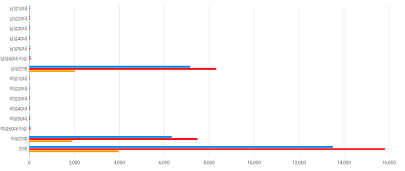

유동인구 분석
- 검색 필터
-
-

주제도 유형
*분석영역 행정동 선택 시 밀도
주제도가 추가로 생성됩니다.
성_연령별 유동인구 분석 현황
| 구분 | 현황 | 전월대비 | 전년동월대비 | |||
|---|---|---|---|---|---|---|
| 유동인구(명) | 비율(%) | 증감(명) | 증감율(%) | 증감(명) | 증감율(%) | |
| 구분 남성10대 | 현황:유동인구(명)21 | 현황:비율(%)0.14 | 전월대비:증감(명)-4 | 전월대비:증감율(%)-14.32 | 전년동월대비:증감(명)13 | 전월동월대비:증감율(%)201.4 |
| 구분 남성20대 | 현황:유동인구(명)21 | 현황:비율(%)0.14 | 전월대비:증감(명)-4 | 전월대비:증감율(%)-14.32 | 전년동월대비:증감(명)13 | 전월동월대비:증감율(%)201.4 |
| 구분 남성30대 | 현황:유동인구(명)21 | 현황:비율(%)0.14 | 전월대비:증감(명)-4 | 전월대비:증감율(%)-14.32 | 전년동월대비:증감(명)13 | 전월동월대비:증감율(%)201.4 |
| 구분 남성40대 | 현황:유동인구(명)21 | 현황:비율(%)0.14 | 전월대비:증감(명)-4 | 전월대비:증감율(%)-14.32 | 전년동월대비:증감(명)13 | 전월동월대비:증감율(%)201.4 |
| 구분 남성50대 | 현황:유동인구(명)21 | 현황:비율(%)0.14 | 전월대비:증감(명)-4 | 전월대비:증감율(%)-14.32 | 전년동월대비:증감(명)13 | 전월동월대비:증감율(%)201.4 |
| 구분 남성60대 | 현황:유동인구(명)21 | 현황:비율(%)0.14 | 전월대비:증감(명)-4 | 전월대비:증감율(%)-14.32 | 전년동월대비:증감(명)13 | 전월동월대비:증감율(%)201.4 |
| 구분 남성전체 | 현황:유동인구(명)21 | 현황:비율(%)0.14 | 전월대비:증감(명)-4 | 전월대비:증감율(%)-14.32 | 전년동월대비:증감(명)13 | 전월동월대비:증감율(%)201.4 |
| 구분 여성10대 | 현황:유동인구(명)21 | 현황:비율(%)0.14 | 전월대비:증감(명)-4 | 전월대비:증감율(%)-14.32 | 전년동월대비:증감(명)13 | 전월동월대비:증감율(%)201.4 |
| 구분 여성20대 | 현황:유동인구(명)21 | 현황:비율(%)0.14 | 전월대비:증감(명)-4 | 전월대비:증감율(%)-14.32 | 전년동월대비:증감(명)13 | 전월동월대비:증감율(%)201.4 |
| 구분 여성30대 | 현황:유동인구(명)21 | 현황:비율(%)0.14 | 전월대비:증감(명)-4 | 전월대비:증감율(%)-14.32 | 전년동월대비:증감(명)13 | 전월동월대비:증감율(%)201.4 |
| 구분 여성40대 | 현황:유동인구(명)21 | 현황:비율(%)0.14 | 전월대비:증감(명)-4 | 전월대비:증감율(%)-14.32 | 전년동월대비:증감(명)13 | 전월동월대비:증감율(%)201.4 |
| 구분 여성50대 | 현황:유동인구(명)21 | 현황:비율(%)0.14 | 전월대비:증감(명)-4 | 전월대비:증감율(%)-14.32 | 전년동월대비:증감(명)13 | 전월동월대비:증감율(%)201.4 |
| 구분 여성60대 | 현황:유동인구(명)21 | 현황:비율(%)0.14 | 전월대비:증감(명)-4 | 전월대비:증감율(%)-14.32 | 전년동월대비:증감(명)13 | 전월동월대비:증감율(%)201.4 |
| 구분 여성전체 | 현황:유동인구(명)21 | 현황:비율(%)0.14 | 전월대비:증감(명)-4 | 전월대비:증감율(%)-14.32 | 전년동월대비:증감(명)13 | 전월동월대비:증감율(%)201.4 |
| 구분 전체 | 현황:유동인구(명)21 | 현황:비율(%)0.14 | 전월대비:증감(명)-4 | 전월대비:증감율(%)-14.32 | 전년동월대비:증감(명)13 | 전월동월대비:증감율(%)201.4 |
성_연령별 유동인구 수
